Cómo registrar en la aplicación «Semáforo Jóvenes 26» la asistencia, la actitud, la comunicación y el cumplimiento de cada estudiante, paso a paso.
CITEF · Centro Integral Tecnológico Educativo de Flores · Curso Jóvenes 26 (INEFOP)
Las capturas de pantalla usan nombres de ejemplo, no los de los estudiantes del curso.
Es una aplicación compartida: cada docente registra lo que observa en su clase y todo se guarda en una misma base de datos. La coordinación ve el resumen de cada estudiante y el ranking para las pasantías.
En cada clase se evalúan cuatro aspectos:
Cada aspecto se califica con tres colores, como un semáforo:
| Pestaña | Para qué sirve | Quién la usa |
|---|---|---|
| Registrar clase | Calificar a cada estudiante en su clase del día. | Todos los docentes |
| Hitos | Crear y calificar entregas con fecha: trabajos, presentaciones orales, pruebas. | Todos los docentes |
| Semáforo | Ver el resumen de todos los estudiantes por semana, quincena o módulo. | Docentes y coordinación |
| Ranking | Ver el orden para las pasantías. | Coordinación |
| Ficha | Ver la historia de un estudiante, clase por clase. | Docentes y coordinación |
| Criterios | Qué significa cada color. | Todos |
| Configuración | Estudiantes, componentes, fechas y pesos. | Solo coordinación |
| Ayuda | Una versión corta de esta guía. | Todos |
Esto se hace una sola vez. Es el paso más importante: si no se hace bien, la aplicación se ve pero no guarda.
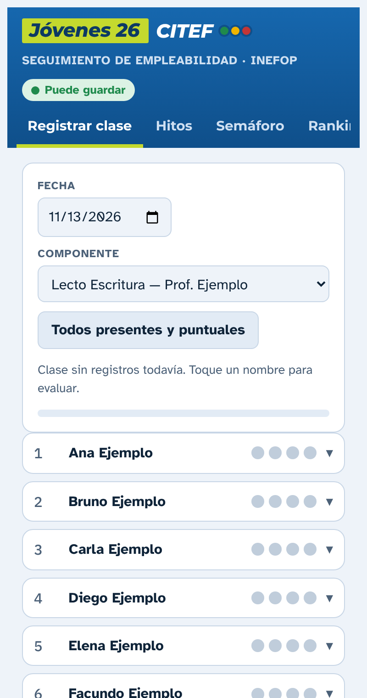
Debajo del título dice ● Puede guardar. Ya puede calificar.
Si dice ● Solo lectura o ● Sin sesión, vaya a la sección 6 de esta guía, «Problemas frecuentes».
En el celular funciona igual. Conviene guardar el enlace en favoritos o en la pantalla de inicio.
Entre a Registrar clase. La fecha viene con el día de hoy. Si registra una clase de otro día, cámbiela.
En Componente elija su espacio, por ejemplo «Lecto Escritura».
El formato de la fecha (día/mes o mes/día) depende de la configuración de su celular o computadora.
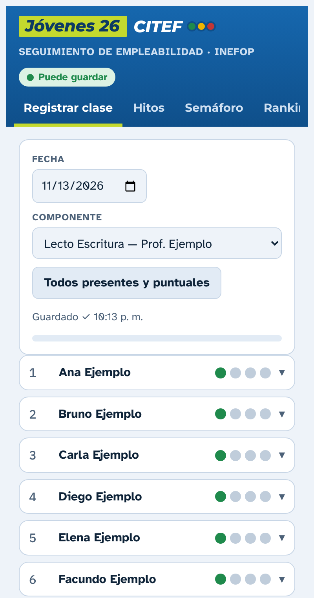
Todos quedan con la asistencia en verde: es el primer punto verde al lado de cada nombre.
Después corrija solo a quienes llegaron tarde o faltaron. Así se ahorra tiempo.
Debajo de la fecha aparece «Guardado ✓» con la hora.
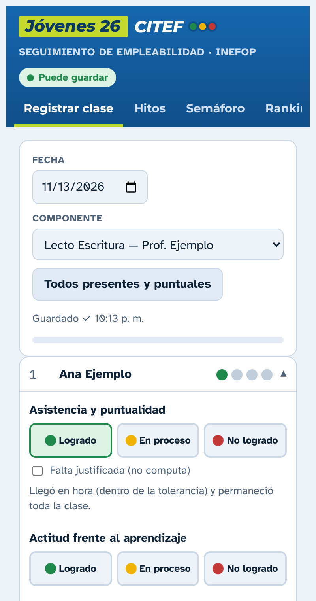
Se abre su tarjeta con los cuatro aspectos. Cada uno tiene tres botones: Logrado, En proceso y No logrado.
Debajo del botón elegido aparece qué significa ese color, para ayudarlo a decidir.
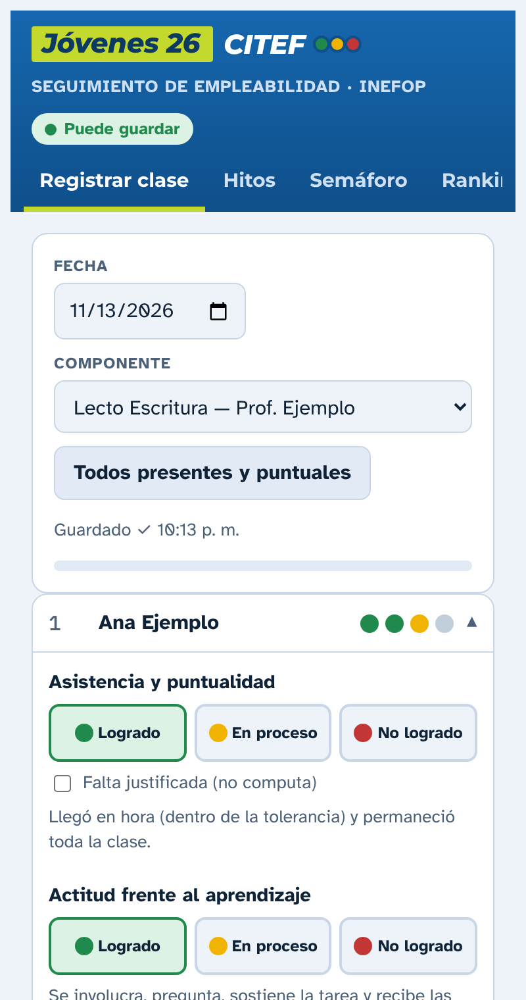
El botón elegido queda con borde de color. Los cuatro puntos al lado del nombre muestran cómo va.
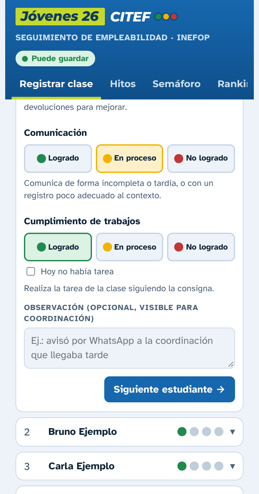
Es opcional. Sirve para dejar un dato que la coordinación debe saber, por ejemplo: «avisó que llegaba tarde».
Se cierra esta tarjeta y se abre la del estudiante que sigue en la lista.
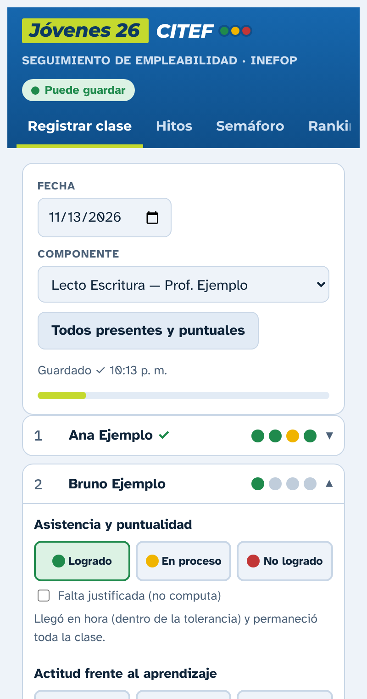
Cuando un estudiante tiene todo calificado, aparece una ✓ junto a su nombre.
La barra verde lima debajo de la fecha muestra cuántos estudiantes faltan.
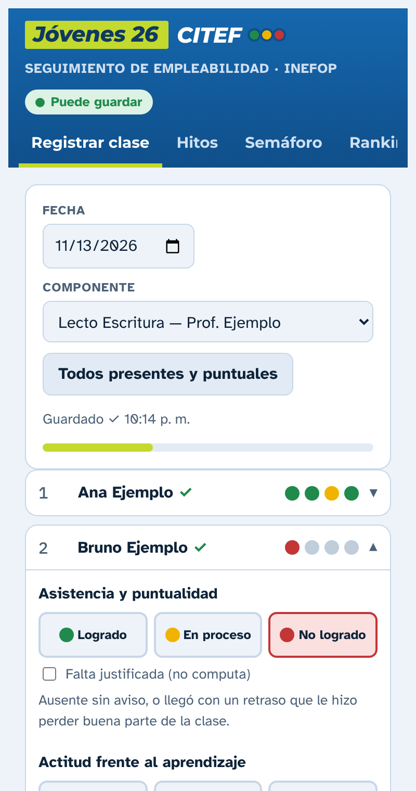
Toque No logrado en Asistencia. Los otros tres aspectos de esa clase se borran solos: no se puede evaluar actitud ni comunicación de alguien que no estuvo.
Si la falta está justificada (certificado, aviso previo aceptado), marque la casilla «Falta justificada». Esa clase no cuenta para ese estudiante.
Un hito es una entrega con fecha: un trabajo práctico, una presentación oral, una prueba. Cada hito vale el doble que una tarea de clase dentro del aspecto Cumplimiento.
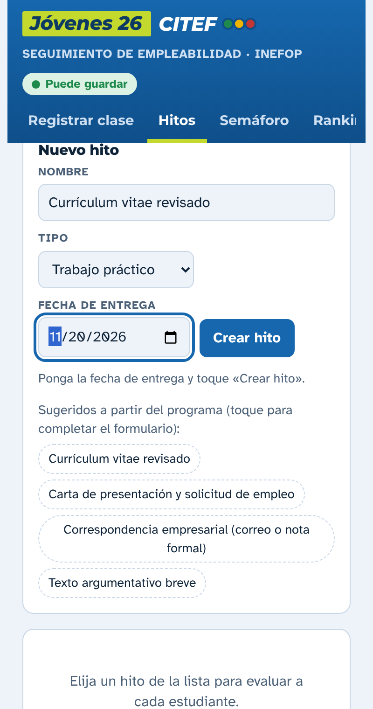
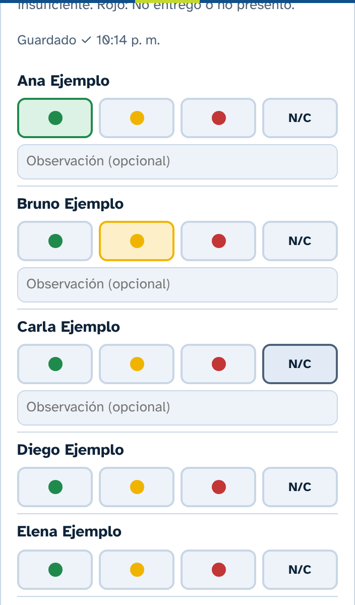
Toque el hito en la lista. Para cada estudiante elija:
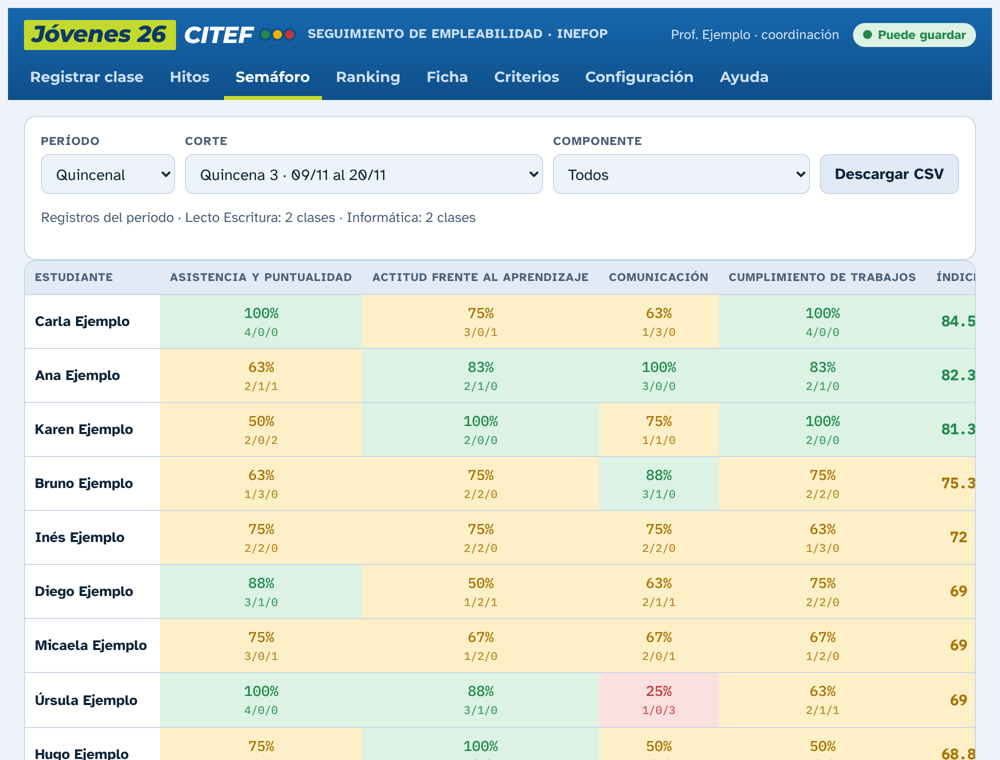
Una fila por estudiante y una columna por aspecto. Arriba se elige el período (semana, quincena, módulo o todo el curso) y el componente. La última columna indica a quién conviene conversar o citar a entrevista.
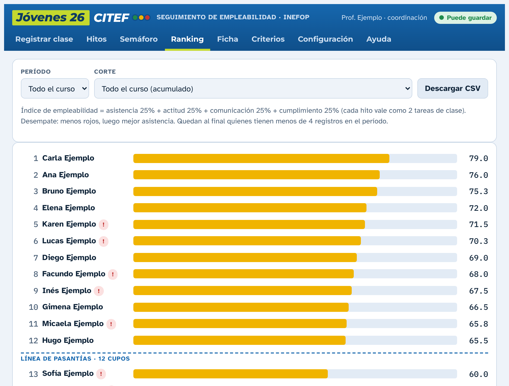
El orden de los estudiantes según el índice de empleabilidad. La línea punteada marca los 12 cupos de pasantía y, más abajo, los 15 cupos ampliados.
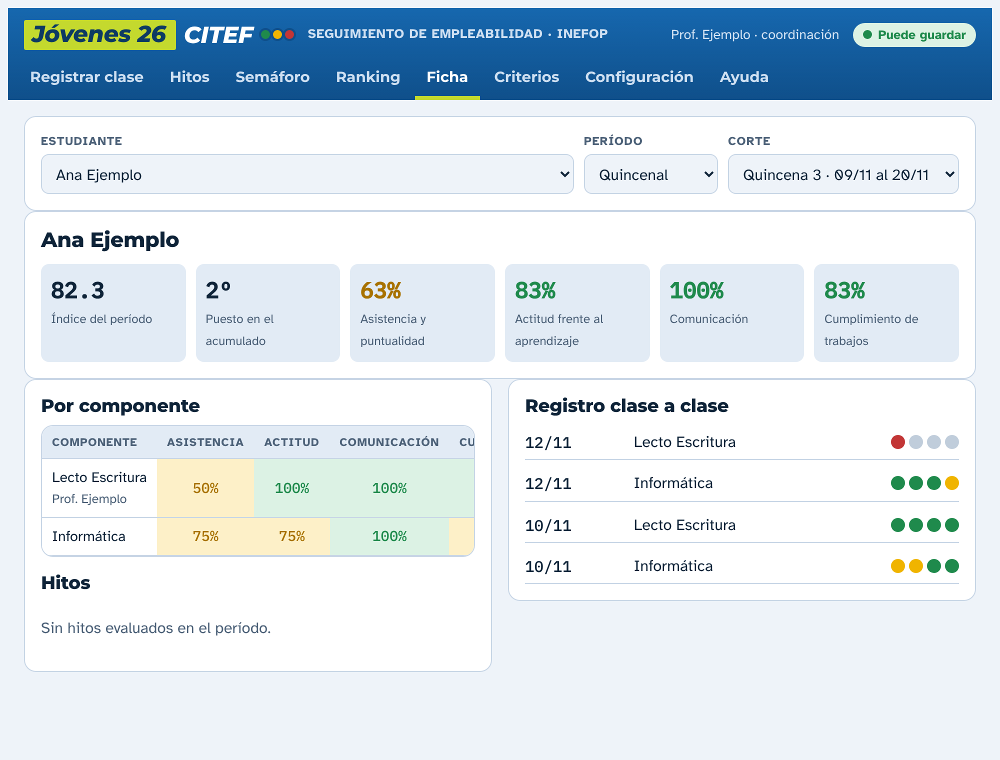
La historia de un estudiante: su índice, su puesto, cómo le va en cada componente y cada clase registrada con sus observaciones. Sirve para preparar una conversación personal.
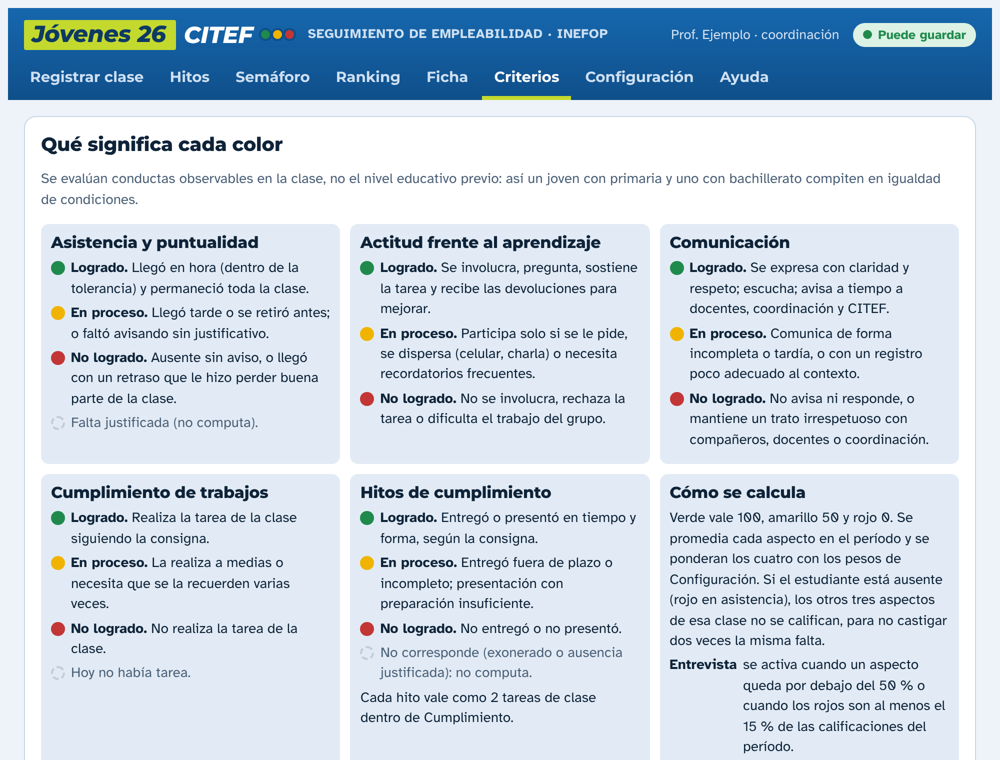
Qué significa cada color en cada aspecto y cómo se calcula el índice.
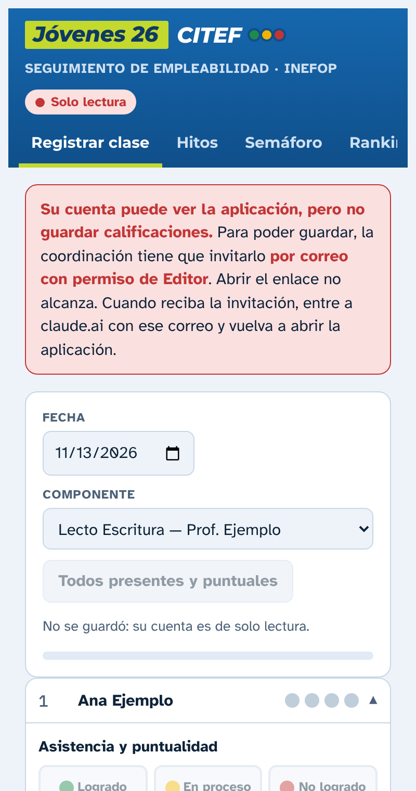
Así se ve «Solo lectura».
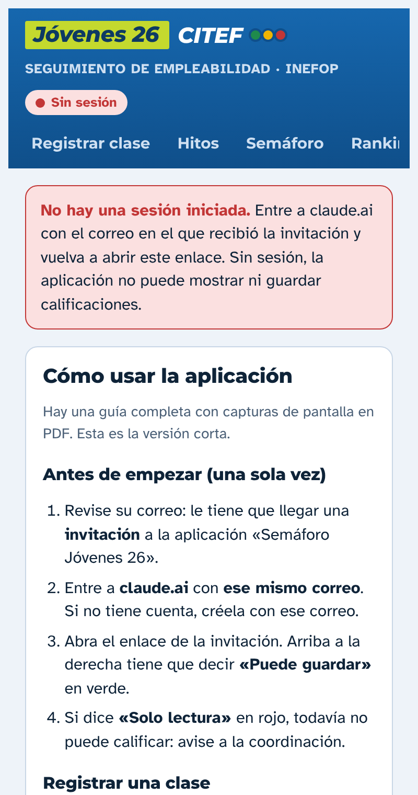
Así se ve «Sin sesión».
| Lo que ve | Qué pasa y qué hacer |
|---|---|
| ● Solo lectura y un cuadro rojo | Su cuenta puede ver la aplicación pero no guardar. Pida a la coordinación que lo invite por correo con permiso de Editor. Cuando llegue la invitación, entre a claude.ai con ese correo y vuelva a abrir la aplicación. |
| ● Sin sesión | No entró a claude.ai, o entró con otra cuenta. Entre con el correo al que llegó la invitación y vuelva a abrir el enlace. |
| «No se guardó: su cuenta es de solo lectura» | Igual que «Solo lectura». Lo que marcó no quedó registrado: anótelo en papel y cárguelo cuando tenga el permiso. |
| «No se pudo guardar… Se reintentará» | Se cortó internet. No cierre la página: la aplicación vuelve a intentar sola. Espere a que diga «Guardado ✓». |
| No aparece mi componente | Pida a la coordinación que lo agregue en Configuración. |
| El aviso dice «Este componente no se dicta en esta fecha» | Es solo un aviso, se puede registrar igual. Revise que la fecha sea la correcta. |
| La fecha no deja elegir un día | Solo se pueden elegir días entre el inicio y el fin del curso. |
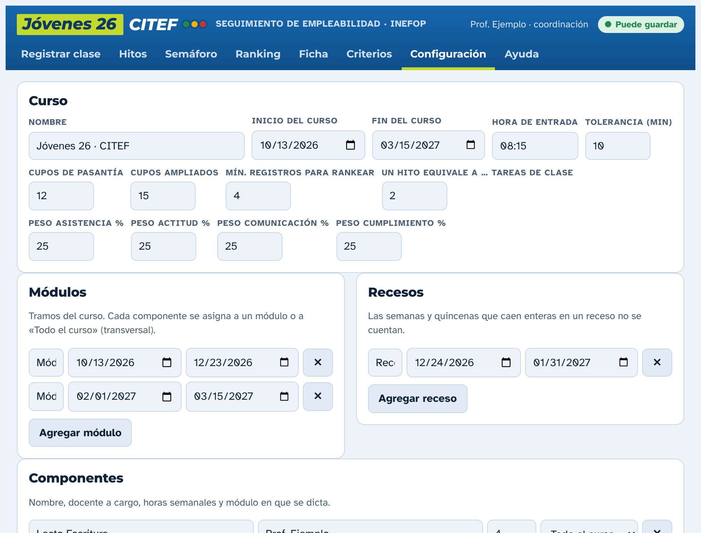
Aquí se cargan las fechas del curso, los módulos, el receso, los componentes con su docente, los estudiantes, los cupos y el peso de cada aspecto. Los cambios se guardan con el botón Guardar configuración, al final de la página.
Un ensayo de unos 15 minutos para que cada docente compruebe que todo funciona.